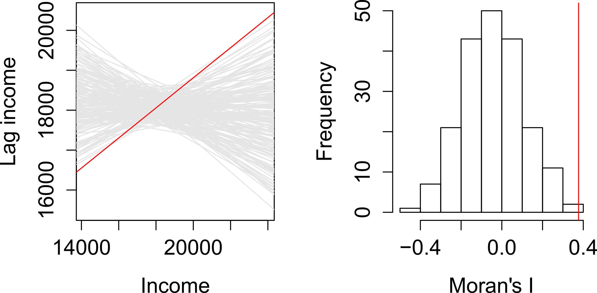

This week, we will explore the concept of spatial dependence: the idea that the value of a variable at one location is influenced by the value of the same variable at nearby locations. This dependence can be statistically measured by assessing spatial autocorrelation, which refers to the degree of similarity between values of a variable at different locations or between multiple variables at the same location.
1.1 Lecture slides
You can download the slides of this week’s lecture here: [Link].
1.2 Reading list
Essential readings
Griffith, D. 2017. Spatial Autocorrelation. The Geographic Information Science & Technology Body of Knowledge. [Link]
Gimond, M. 2023. Intro to GIS and spatial analysis. Chapter 13: Spatial autocorrelation. [Link]
Livings, M. and Wu, A-M. 2020. Local Measures of Spatial Association. The Geographic Information Science & Technology Body of Knowledge. [Link]
Su, R. Newsham, N., and Dodge, S. 2024. Spatiotemporal dynamics of ethnoracial diversity and segregation in Los Angeles County: Insights from mobile phone data. Computers, Environment and Urban Systems 114: 102203. [Link]
Suggested readings
Lee, S. 2019. Uncertainty in the effects of the modifiable areal unit problem under different levels of spatial autocorrelation: a simulation study. International Journal of Geographical Information Science 33: 1135-1154. [Link]
Harris, R. 2020. Exploring the neighbourhood-level correlates of Covid-19 deaths in London using a difference across spatial boundaries method. Health & Place 66: 102446. [Link]
1.3 Population groups in London
This week, we will investigate to what extent people in London who self-identified as Asian-Bangladeshi in the 2021 Census are clustered in London at the LSOA-level. The data covers all usual residents, as recorded in the 2021 Census for England and Wales, aggregated at the Lower Super Output Area (LSOA) level.
An LSOA is a geographic unit used in the UK for statistical analysis. It typically represents small areas with populations of around 1,000 to 3,000 people and is designed to ensure consistent data reporting. LSOAs are commonly used to report on census data, deprivation indices, and other socio-economic statistics.
The data has been extracted using the Custom Dataset Tool and subsequently processed to include only the proportion of individuals who self-identify as belonging to one of the Asian groups defined in the Census. Along with this dataset, we also have access to a GeoPackage that contains the LSOA boundaries.
You can download both files below and save them in your project folder under data/attributes and data/spatial, respectively.
Rows: 4994 Columns: 6
── Column specification ────────────────────────────────────────────────────────
Delimiter: ","
chr (1): lower_layer_super_output_areas_code
dbl (5): asian_asian_british_or_asian_welsh_bangladeshi, asian_asian_british...
ℹ Use `spec()` to retrieve the full column specification for this data.
ℹ Specify the column types or set `show_col_types = FALSE` to quiet this message.
# inspecthead(lsoa21)
Simple feature collection with 6 features and 8 fields
Geometry type: MULTIPOLYGON
Dimension: XY
Bounding box: xmin: 531948.3 ymin: 180733.9 xmax: 545296.2 ymax: 184700.6
Projected CRS: OSGB36 / British National Grid
lsoa21cd lsoa21nm bng_e bng_n long lat
1 E01000001 City of London 001A 532123 181632 -0.097140 51.51816
2 E01000002 City of London 001B 532480 181715 -0.091970 51.51882
3 E01000003 City of London 001C 532239 182033 -0.095320 51.52174
4 E01000005 City of London 001E 533581 181283 -0.076270 51.51468
5 E01000006 Barking and Dagenham 016A 544994 184274 0.089317 51.53875
6 E01000007 Barking and Dagenham 015A 544187 184455 0.077763 51.54058
globalid pop2021 geom
1 {1A259A13-A525-4858-9CB0-E4952BA01AF6} 1473 MULTIPOLYGON (((532105.3 18...
2 {1233E433-0B0D-4807-8117-17A83C23960D} 1384 MULTIPOLYGON (((532634.5 18...
3 {5163B7CB-4FFE-4F41-95B9-AA6CFC0508A3} 1613 MULTIPOLYGON (((532135.1 18...
4 {2AF8015E-386E-456D-A45A-D0A223C340DF} 1101 MULTIPOLYGON (((533808 1807...
5 {B492B45E-175E-4E77-B0B5-5B2FD6993EF4} 1842 MULTIPOLYGON (((545122 1843...
6 {4A374975-B1D0-40CE-BF6E-6305623E5F7E} 2904 MULTIPOLYGON (((544180.3 18...
Figure 1: Proportions of people that self-identify as Asian-Bangladeshi.
Looking at the map, the geographical patterning of the percentage of the population that self-identify as Asian-Bangladeshi appears to be neither random nor uniform, with a tendency for similar values to be found in some neighbourhoods in East London. Let us compare our map to a map with the same values which have been randomly permutated:
Figure 2: Proportions of people that self-identify as Asian-Bangladeshi with randomly permutated values.
Looking at Figure 2, even with the values being randomly permuted, certain patterns seem to emerge. This observation raises an important question: to what extent are the patterns that we see in the actual data actually present? A widely used method to quantify the similarity between neighbouring locations is by calculating Moran’s I statistic. This measure assesses spatial autocorrelation, indicating the degree to which values of a variable cluster spatially — either through similar (positive spatial autocorrelation) or contrasting values (negative spatial autocorrelation).
Underlying our Moran’s I test is the concept of a spatial lag. A spatial lag refers to a concept in spatial analysis where the value of a variable at a given location is influenced by the values of the same variable at neighboring locations. Essentially, it captures the idea that observations in close proximity are likely to be correlated, meaning that what happens in one area can ‘lag’ into or affect nearby areas. The Moran’s I statistic tries to capture the relationship between a value and its spatial lag. An Ordinary Least Squares (OLS) regression is applied, after both variables have been transformed to z-scores, to fit the data and produce a slope, which determines the Moran’s I statistic.
Figure 3: Scatter plot of spatially lagged income (neighboring income) versus each areas income. Source: Manuel Gimond.
Moran’s I values typically range from \(-1\) to \(1\):
+1: Indicates perfect positive spatial autocorrelation. High values cluster near other high values, and low values near other low values.
0: Suggests no spatial autocorrelation, meaning the spatial distribution of the variable is random.
-1: Indicates perfect negative spatial autocorrelation. High values cluster near low values, and vice versa (a checkerboard pattern).
There are two approaches to estimating the significance of the Moran’s I statistic: an analytical method and a computational method. The analytical method relies on assumptions about the data, such as normality, which can sometimes limit its reliability. In contrast, the computational method, which is preferred here, does not make such assumptions and offers a more flexible and robust evaluation of significance.
The computational approach is based on a repeated random permutation of the observed values. The Moran’s I statistic is then calculated for each of these randomly reshuffled data sets, generating a reference distribution. By comparing the observed Moran’s I value to this reference distribution, we can assess whether our observed statistic is typical or an outlier and calculate a psuedo\(p\)-value (see Figure 4). If the observed Moran’s I value is an outlier, meaning it falls outside the range expected from random data distribution, it suggests a significant degree of clustering in the data.

Figure 4: Determining significance using a Monte Carlo simulation. Source: Manuel Gimond.
We can derive a pseudo-\(p\) value from these simulation results as follows:
\[
\frac{N_{extreme} + 1}{N + 1}
\]
where \({N_{extreme}}\) is the number of simulated Moran’s I values that were more extreme than our observed statistic and \({N}\) is the total number of simulations. In the example shown in Figure 4, only 1 out the 199 simulations was more extreme than the observed local Moran’s I statistic. Therefore \({N_{extreme}}\) = 1 , so \(p\) is equal to \((1+1) / (199 + 1) = 0.01\). This means that there is a one percent probability that we would be wrong in rejecting the null hypothesis of spatial randomness.
1.3.2 Defining neighbours
If the purpose of a Moran’s I test is to quantify how similar places are to their neighbours, the first step is to define what constitutes a neighbour. This definition is not necessarily straightforward, because ‘neighbouring’ observations can be determined in various ways, based on either geometry or proximity. The most common methods include:
Type
Description
Contiguity
Spatial units are considered neighbours if their polygon boundaries touch.
Fixed Distance
Spatial units are considered neighbours if they fall within a specified distance.
Nearest Neighbours
Spatial units are considered neighbours if they are among the closest neighbours.
To capture this information, we need to formalise the spatial relationships within our data by constructing a spatial weights matrix (\(W_{ij}\)). This matrix defines which units are neighbours based on our chosen criteria.
In the following example, neighbours are defined as places that share a border (i.e., they are contiguous). Currently, it is sufficient for them to meet at a single point — so if two places are triangular, touching corners would count them as neighbours. If, however, you require them to share an edge, rather than just a corner, you can modify the default argument by setting queen = FALSE.
Neighbour list object:
Number of regions: 4994
Number of nonzero links: 29472
Percentage nonzero weights: 0.1181714
Average number of links: 5.901482
Link number distribution:
1 2 3 4 5 6 7 8 9 10 11 12 13 14 15 16
3 19 185 670 1244 1331 841 404 185 70 21 13 3 1 2 1
20
1
3 least connected regions:
2329 3915 4440 with 1 link
1 most connected region:
4990 with 20 links
The neighbour list object is a sparse matrix that lists the neighboring polygons for each LSOA. This matrix represents the spatial relationships between LSOAs, where each entry indicates which polygons share boundaries. These neighborhood relationships can be visualised as a graph by extracting the coordinate points of the centroids of the polygons representing each LSOA:
Regardless of the neighborhood definition you choose, it is important to verify the results, particularly when using contiguity-based approaches. If your spatial file has issues such as polygons that appear adjacent but do not actually share a border, your results may be inaccurate. You could increase the default value of the snap distance parameter in the poly2nb() function to include these polygons only separated by small gaps.
R code
# extract centroids from polygonslsoa21_cent <-st_centroid(lsoa21, of_largest_polygon =TRUE)
Warning: st_centroid assumes attributes are constant over geometries
Figure 5: Neighbourhood graph using queen contiguity.
With nearly 5,000 LSOAs, the neighbourhood graph appears quite crowded. However, it seems acceptable, with no noticeable gaps and a dense network of neighbours in Central London, where many smaller LSOAs are located.
1.3.3 Defining weights
The neighbourhood list simply identifies which areas (polygons) are neighbours, but spatial weights take this a step further by assigning a weight to each neighbourhood connection. This is important because not all polygons have the same number of neighbours. To ensure that our spatially lagged values are comparable across neighbourhoods of different sizes, standardisation is required. The code below uses style = 'W' to row-standardise the values: if an LSOA has five neighbours, the value of the spatially lagged variable will be the average of that variable across those five neighbours, with each neighbour receiving equal weight.
Not all places have neighbours. Islands, by definition, will not be considered as neighbours using a contiguity approach. If you attempt to create spatial weights using the nb2listw() function with a neighbourhood list that includes places without neighbours, you will encounter an error message. Potential solutions include using a different neighbourhood definition (e.g. \(k\)-nearest neighbours) or manually editing the neighbourhood file if you wish to include these polygons. Alternatively, you can leave it as is but then you must specify the argument zero.policy = TRUE in nb2listw() to allow for empty sets.
1.3.4 Global Moran’s I
Now that everything is in place, we can begin by plotting the proportion of people without schooling against the spatially lagged values:
Figure 6: Plot of lagged values versus polygon values.
We observe a positive relationship between our asian_bangladeshi variable and the spatially lagged values, suggesting that our global Moran’s I test will likely yield a statistic reflective of the slope visible in the scatter plot.
Monte-Carlo simulation of Moran I
data: lsoa21$asian_bangladeshi
weights: lsoa21_nb_weights
number of simulations + 1: 1000
statistic = 0.84992, observed rank = 1000, p-value = 0.001
alternative hypothesis: greater
The results of the Monte Carlo simulation, visualised in Figure 7, suggest that there is statistically significant positive autocorrelation in our variable. This indicates that LSOAs with higher percentages of people that self-identify as Asian-Bangladeshi tend to be surrounded by other LSOAS with similarly high percentages. Likewise, LSOAs with lower percentages of people that self-identify as Asian Bangladeshi are generally surrounded by LSOAs with similarly low values.
R code
# permutation distributionplot(moran, main ="", xlab ="Variable: Asian-Bangladeshi")
Figure 7: Density plot of permutation outcomes.
1.3.5 Local Moran’s I
Although we have established that there is positive spatial autocorrelation in our data, we still need to identify the specific spatial patterns. Looking back at Figure 3, you will notice that the plot is divided into four quadrants.
Quadrant
Description
Top-right quadrant
This area represents LSOAs that have a higher-than-average share of the population without schooling and are surrounded by other LSOAs with similarly high shares of the population without schooling. These are known as high-high clusters.
Bottom-left quadrant
This area represents LSOAs with a lower-than-average share of the population without schooling, surrounded by other LSOAs with similarly low shares. These are low-low clusters.
Top-left quadrant
LSOAs with a higher-than-average share of the population without schooling surrounded by LSOAs with a lower-than-average share. These are high-low clusters.
Bottom-right quadrant
LSOAs with a lower-than-average share of the population without schooling surrounded by LSOAs with a higher-than-average share. These are low-high clusters.
We can show these area on a map by deconstructing the Moran’s I into a series of local Moran values, each measuring how similar each place is (individually) to its neighbours.
We are not given a single statistic as we did with our global Moran’s I, but rather we get a table of different statistics that are all related back to each of the LSOAs in our dataset. If we refer to the help page for the localmoran() function, we can find detailed explanations of these statistics. The most relevant ones include:
Name
Description
Ii
Local Moran’s I statistic.
E.Ii
Expectation (mean) of the local Moran’s I statistic.
Var.Ii
Variance of local Moran’s I statistic
Z.Ii
Standard deviation (z-score) of the local Moran’s I statistic.
Pr()
Pseudo\(p\)-value of local Moran’s I statistic based on standard deviations and means from the permutation sample.
Pr() Sim
Pseudo\(p\)-value of local Moran’s I statistic based on the rank within the permutation sample, assuming a uniform distribution.
Pr(Folded) Sim
Pseudo\(p\)-value of local Moran’s I statistic based on the rank within the permutation sample using a one-sided test, assuming a uniform distribution.
We can further extract the quadrants to which of all these polygons have been assigned:
This type of map is called a LISA map and is a great way of showing how a variable is actually clustering over space. However, we can improve on this further by only mapping the statistically significant clusters:
Figure 9: Mapping the significant Local Moran’s I clusters.
This new map may still not fully address the issue of statistical significance due to repeated testing, and some values may appear significant purely by chance. To correct for this, you can adjust the \(p\)-values using R’s p.adjust() function. For further details, refer to Manual Gimond’s explanation of the multiple comparison problem in the context of the pseudo-\(p\) values.
1.4 Assignment
Any statistic that includes spatial weights is dependent upon how those weights are defined. We have so far used first order contiguity, i.e. polygons that share a boundary, but there is no particular reason why we should not include second order contiguity polygons (i.e. neighbours of neighbours), use a fixed distance neighbours definitions, or adopt a \(k\) nearest neighbours definition. Try to do the following:
Extract the centroids from the lsoa21 file.
Identify the 5 nearest neighbours for each LSOA, using the knearneigh() function.
Create a neigbhour list of these nearest neighbours, using the knn2nb() function.
Compute the Global Moran’s I of the asian_indian variable using this new neighbourhood definition.
Map the statistically significant clusters of Local Moran’s I based on this new neighbourhood definition.
Compare these results to the output of our asian_bangladeshi values. Do both variables exhibit clustering? Are the clusters located in similar areas?
1.5 Before you leave
And that is how you can measure spatial dependence in your dataset through different spatial autocorrelation measures. Next week we will focus on the last topic within our set of core spatial analysis methods and techniques, but this week we have covered enough! Probably time to get back to that pesky reading list.